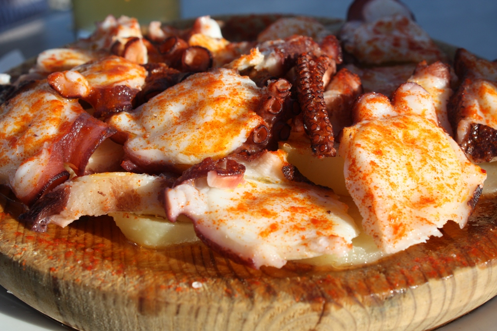
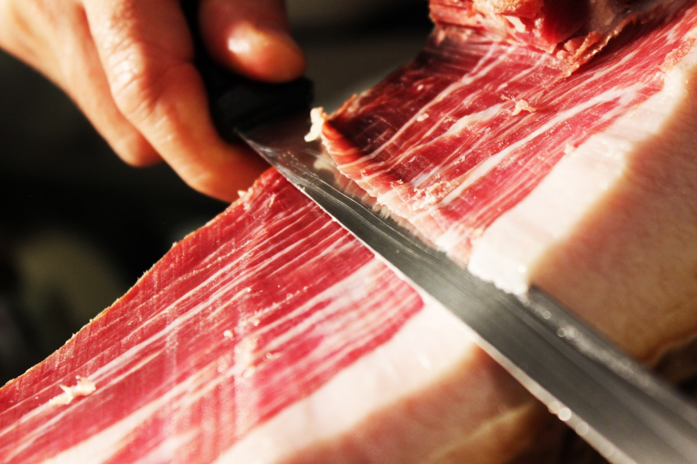
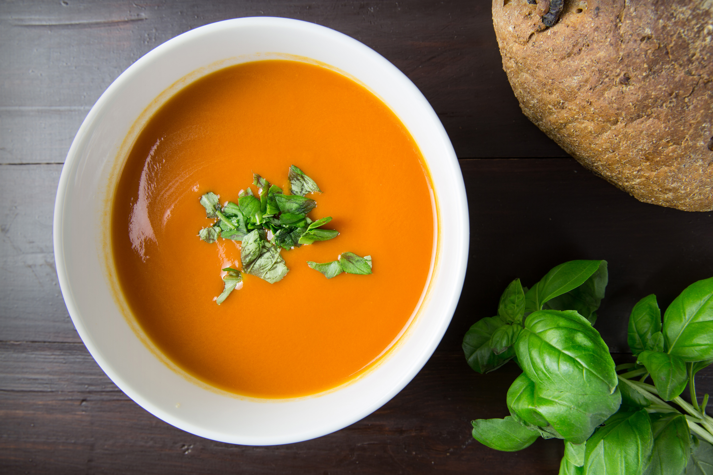

| Comida |
Información |
Imagen |
| Tortilla de patatas |
Este sencillo plato que mezcla simplemente patata frita con huevo batido y, según las preferencias del cocinero, cebolla, es un acierto seguro. |
 |
| Gazpacho |
Una sopa fría que mezcla los ingredientes típicos de la huerta, en el que el tomate y el pimiento son los protagonistas. |
 |
| Paella |
La paella es el plato más internacional. Mezcla de arroz con verduras y carne, pescados o marisco. En su receta original, el arroz valenciano lleva carne de conejo y de pollo. |
 |
| Pulpo a la gallega |
Uno de los más deliciosos es el pulpo a feira, un plato muy sencillo; servido sobre una tabla de madera con cachelos, sal, pimentón y un poco de aceite de oliva virgen extra. |
 |
| Fabada asturiana |
La fabada asturiana es un plato de cuchara que te abraza con su calidez y sabor reconfortante. Se trata de un guiso de alubias blancas, chorizo, morcilla y tocino. |
.jpg) |
| Jamón ibérico |
Se trata de un jamón curado producido a partir de cerdos ibéricos alimentados con bellotas. Su sabor intenso y su textura única lo convierten en un placer para los sentidos. |
 |
| Salmorejo cordobés |
Se trata de un puré de tomates, pan, ajo y aceite de oliva que se sirve frío. Su textura cremosa y su sabor fresco lo convierten en un plato ideal para el verano. |
 |
| Croquetas |
Consiste en una porción de masa hecha de una salsa densa como la bechamel y un picadillo de ingredientes, que ha sido rebozada, y frita en abundante aceite. |
 |
| Serranito |
Un serranito es un bocadillo y una receta original típica de Andalucía, que tiene su origen en Sevilla. |
 |